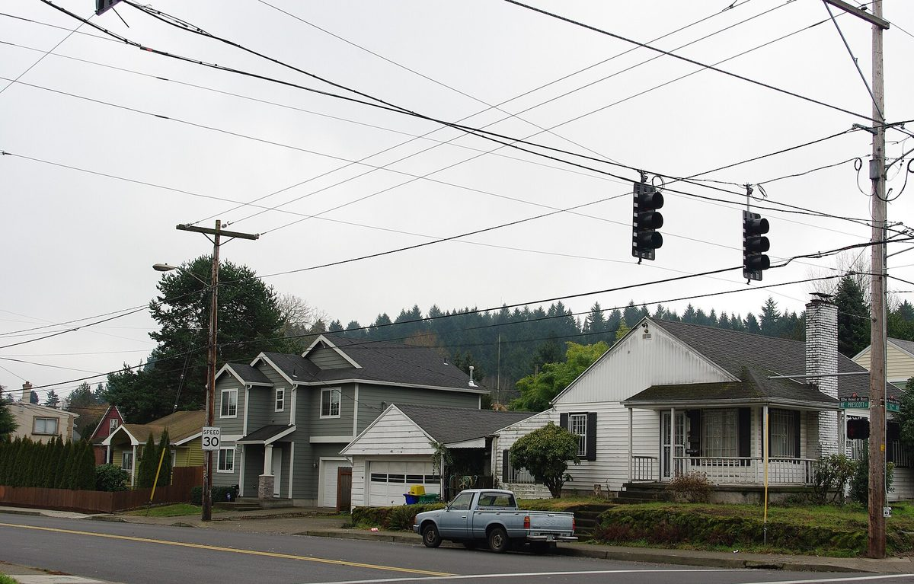

미국 포틀랜드, 옛 매립지에 저소득 140가구 위한 공동체 태양광…시 청정에너지기금으로 추진

82번가 부지에 태양광 어레이 7개, 가구당 연 약 300달러 절감 추산…내년 2월 완공 예정, 가입 자리 130곳 모집
미국 오리건주 포틀랜드 북동부 82번가(Northeast 82nd Avenue)의 옛 채석장·매립지에 저소득 가구를 위한 공동체 태양광이 들어선다. 82번가 공동체 태양광 사업은 태양광 어레이 7개로 이뤄지며, 퍼시픽파워(Pacific Power)와 포틀랜드제너럴일렉트릭(Portland General Electric) 고객인 동부 포틀랜드 저소득 140가구의 전기요금을 낮추는 데 쓰인다. 사업을 이끈 아시아태평양계 시민단체 APANO는 가입 가구가 한 해 약 300달러, 사업 수명 20년 동안 모두 90만 달러를 아낄 것으로 추산했다. 연방정부가 기후 예산을 거둬들이는 가운데 재원은 포틀랜드 청정에너지기금(PCEF)에서 나왔고, 이 기금이 돈을 댄 공동체 태양광으로는 7번째이며 PCEF는 82번가 일대 재생에 모두 6,000만 달러 넘게 투자하고 있다. 부지는 2년 전 이 땅을 사들여 야생동물 병원과 자연보호구역을 만들려는 오리건 버드얼라이언스(Bird Alliance of Oregon)의 땅이고, 시공사 이매진에너지(Imagine Energy)는 비영리단체 리더스비컴레전즈(Leaders Become Legends)와 손잡고 취약계층 직업훈련을 함께 한다. 사업은 내년 2월 완공 예정으로 현재 가입 자리 130곳이 열려 있으며, APANO의 덩컨 황(Duncan Hwang) 지역개발국장은 여기까지 수십 년이 걸렸고 많은 지역 조직활동이 필요했다고 돌아봤다.
시민에너지 관점
가구당 한 해 300달러는 작아 보여도, 버려졌던 매립지가 20년 동안 저소득 140가구에 90만 달러를 돌려주는 지역 자산으로 바뀐다는 데 뜻이 있다. 공공 기후기금을 왜 발전 설비에 쓰느냐는 반론이 나올 수 있지만, 이 사업의 이익은 사업자의 배당이 아니라 저소득 가구의 요금 절감과 취약계층의 일자리 훈련으로 돌아간다. 연방 지원이 끊겨도 지역이 스스로 만든 기후기금과 수십 년 쌓아 온 주민 조직이 있으면 전환은 멈추지 않는다는 점도 보여 준다. 국내에서도 매립지·폐부지 같은 공공 유휴부지를 저소득층과 주민 조직의 공동체 태양광에 먼저 내주는 원칙부터 세워야 한다.
출처: OPB 2026-10-21 Monica Samayoa 원문 보기
米ポートランド、旧埋立地に低所得140世帯のためのコミュニティー・ソーラー…市のクリーンエネルギー基金で推進
82番街の敷地に太陽光アレイ7基、1世帯あたり年約300ドル節約の見込み…来年2月完成予定、加入枠130件を募集
米オレゴン州ポートランド北東部の82番街（Northeast 82nd Avenue）にある旧採石場・埋立地に、低所得世帯のためのコミュニティー・ソーラーが建設される。82番街コミュニティー・ソーラー事業は太陽光アレイ7基で構成され、パシフィック・パワー（Pacific Power）とポートランド・ゼネラル・エレクトリック（Portland General Electric）の顧客である東ポートランドの低所得140世帯の電気料金引き下げに充てられる。事業を主導したアジア太平洋系の市民団体APANOは、加入世帯が年約300ドル、事業期間20年で計90万ドルを節約できると試算している。連邦政府が気候予算を引き揚げるなか、財源はポートランド・クリーンエネルギー基金（PCEF）から出ており、同基金が資金を出したコミュニティー・ソーラーとしては7カ所目で、PCEFは82番街一帯の再生に計6,000万ドル以上を投じている。敷地は2年前にこの土地を購入し、野生動物病院と自然保護区をつくる計画のバード・アライアンス・オブ・オレゴン（Bird Alliance of Oregon）が所有し、施工会社イマジン・エナジー（Imagine Energy）は非営利団体リーダーズ・ビカム・レジェンズ（Leaders Become Legends）と組んで社会的に弱い立場の人々の職業訓練も行っている。事業は来年2月に完成予定で、現在130世帯分の加入枠が空いており、APANOのダンカン・ファン（Duncan Hwang）地域開発局長は、ここまで数十年かかり、多くの地域での組織活動が必要だったと振り返った。
市民エネルギーの視点
1世帯あたり年300ドルは小さく見えても、放置されていた埋立地が20年間で低所得140世帯に90万ドルを還元する地域の資産に変わる点に意味がある。公的な気候基金をなぜ発電設備に使うのかという反論もあり得るが、この事業の利益は事業者の配当ではなく、低所得世帯の料金削減と弱い立場の人々の職業訓練に戻っていく。連邦の支援が途絶えても、地域が自らつくった気候基金と数十年かけて築いた住民組織があれば転換は止まらないことも示している。韓国でも、埋立地や跡地といった公共の遊休地を、低所得層と住民組織のコミュニティー・ソーラーに優先して開放する原則から定めるべきだ。
出典: OPB 2026-10-21 Monica Samayoa 原文を読む
美国波特兰在旧垃圾填埋场建设面向140户低收入家庭的社区太阳能，由市清洁能源基金推动
82街地块设7组太阳能阵列，预计每户每年节省约300美元，明年2月完工，现开放130个加入名额
美国俄勒冈州波特兰东北部82街（Northeast 82nd Avenue）的一处旧采石场和垃圾填埋场上，将建起一座面向低收入家庭的社区太阳能电站。82街社区太阳能项目由7组太阳能阵列组成，用于降低东波特兰140户低收入家庭的电费，这些家庭是Pacific Power和Portland General Electric的用户。主导项目的亚太裔市民团体APANO估算，加入的家庭每年可节省约300美元，在20年的项目寿命内合计节省90万美元。在联邦政府收回气候预算之际，资金来自波特兰清洁能源基金（PCEF），这是该基金资助的第7个社区太阳能项目，PCEF在82街一带的改造上总共投入超过6,000万美元。地块属于两年前买下这块地、计划建设野生动物医院和自然保护区的Bird Alliance of Oregon，施工企业Imagine Energy则与非营利组织Leaders Become Legends合作，为弱势群体提供职业培训。项目预计明年2月完工，目前还有130个加入名额，APANO社区发展主任Duncan Hwang回顾说，走到今天花了几十年时间，也需要大量的社区组织工作。
市民能源视角
每户每年300美元看似不多，但意义在于一块被废弃的填埋场变成了20年内向140户低收入家庭返还90万美元的地方资产。也许有人质疑为何把公共气候基金用在发电设施上，但这个项目的收益并非流向企业分红，而是回到低收入家庭的电费节省和弱势群体的职业培训上。它还表明，即使联邦支持中断，只要有地方自建的气候基金和几十年积累的居民组织，能源转型就不会停下。韩国也应首先确立原则，把填埋场、废弃地等公共闲置土地优先提供给低收入群体和居民组织的社区太阳能。
来源: OPB 2026-10-21 Monica Samayoa 查看原文
Portland turns former landfill into community solar for 140 low-income households with city clean energy fund
Seven solar arrays on 82nd Avenue site expected to save each household about 300 dollars a year; completion due in February, 130 spots open
A community solar project for low-income households is going up on a former quarry and landfill on Northeast 82nd Avenue in Portland, Oregon. The 82nd Avenue Community Solar Project consists of seven solar arrays and will lower the electricity bills of 140 low-income East Portland households that are customers of Pacific Power or Portland General Electric. APANO, the Asian Pacific American community group leading the project, estimates that enrolled households will save about 300 dollars a year, or 900,000 dollars combined over the project's 20-year life. With the federal government pulling back climate funding, the money comes from the Portland Clean Energy Fund (PCEF), making this the seventh community solar site it has funded, and PCEF is investing more than 60 million dollars in total in revitalizing the 82nd Avenue corridor. The land belongs to the Bird Alliance of Oregon, which bought it two years ago to build a wildlife hospital and nature sanctuary, while installer Imagine Energy works with the nonprofit Leaders Become Legends to provide job training for people facing barriers to work. The project is expected to be finished in February with 130 enrollment spots currently open, and APANO community development director Duncan Hwang said getting here took decades and a great deal of community organizing.
Citizen Energy View
Three hundred dollars a year per household may look small, but what matters is that an abandoned landfill becomes a local asset returning 900,000 dollars to 140 low-income households over 20 years. Some may ask why public climate money should go into generating equipment, yet the benefits here flow not to investor dividends but to lower bills for low-income families and job training for people facing barriers. The project also shows that even when federal support dries up, a locally created climate fund and decades of community organizing can keep the transition moving. Korea should start by setting a rule that public idle land such as landfills and derelict sites goes first to community solar run by low-income residents and local groups.
Source: OPB 2026-10-21 Monica Samayoa Read the original